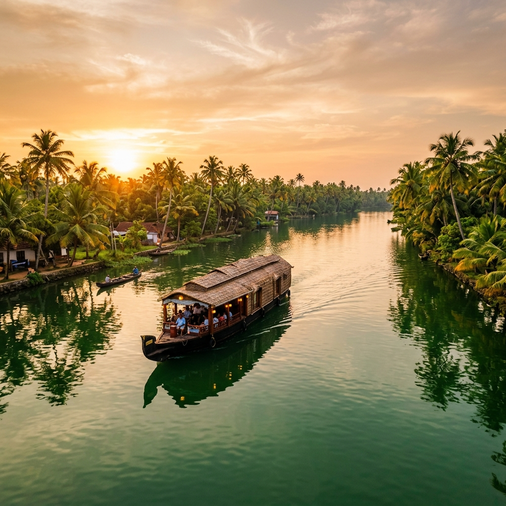
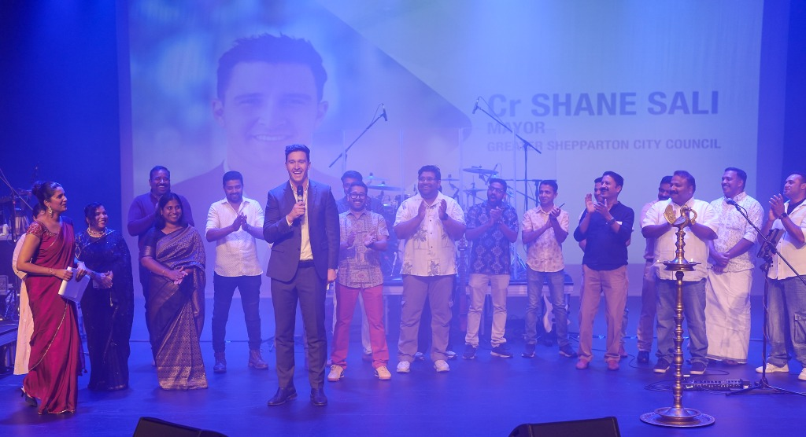
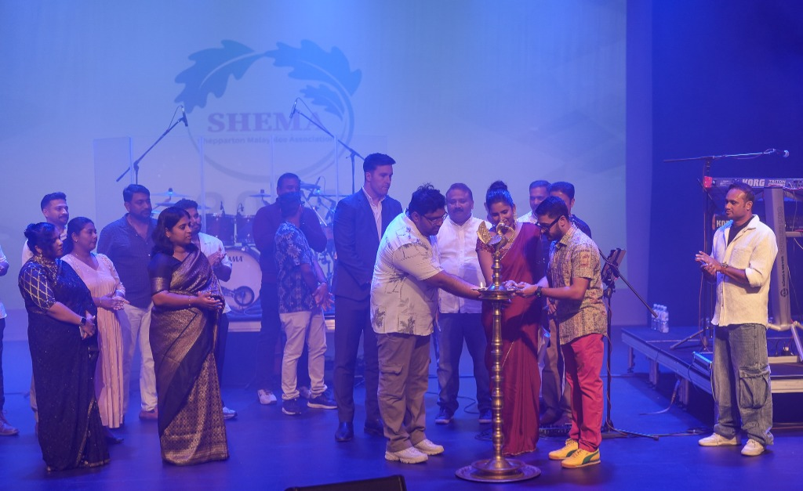

SHEMA

Preserving the vibrant cultural heritage of Kerala — God's Own Country — in the heart of Shepparton. Celebrating traditions, fostering community, and building bridges across cultures.
A 30-second cinematic journey through Kerala's backwaters, performing arts, festivals and iconic landscapes.

Shepparton Malayalee Association (SHEMA) is a vibrant community organisation representing Malayalee families living in and around Shepparton. We play an active role in preserving cultural identity, supporting community connection and celebrating the rich traditions of Kerala through cultural events, festivals and social gatherings.
Members of SHEMA originate from Kerala, a region known for its scenic backwaters, rich artistic heritage and diverse traditions. Kerala's culture is deeply rooted in hospitality, community values and a strong emphasis on education and service.
Many Malayalee families who have migrated to Shepparton are contributing significantly to the region, particularly in the healthcare sector, including nursing, aged care and allied health services. Their commitment and professionalism have become an important part of the local workforce.
Onam, Vishu & Kerala festivals celebrated annually
Fostering connections among Malayalee families
Contributing to nursing, aged care & allied health
Strengthening Greater Shepparton's diversity
A land of enchanting backwaters, ancient performing arts, and timeless traditions that have captivated the world for centuries.
Moments from our community celebrations, cultural events and gatherings that bring the Shepparton Malayalee community together.
With Cr Shane Sali, Mayor — Greater Shepparton City Council

Nilavilakku ceremony — an auspicious beginning to every Kerala celebration
Stay up to date with upcoming SHEMA community events, cultural celebrations and important announcements.
A spectacular live musical evening with the beloved Malayalam singer, songwriter and filmmaker Vineeth Sreenivasan.
A vibrant multicultural talent showcase celebrating the diverse artistic abilities of our community members — singing, dancing, drama and more.
SHEMA's sports and games festival — a fun-filled day of traditional and modern games, fostering teamwork and community spirit.
A day of athletic events and competitions for all ages. Come out and join the fun — running, relays, and field events for the whole family.
Join us for the grand Onam celebration featuring traditional Sadhya feast, cultural performances, Pookalam competition and family fun activities.
Reflect on the year's achievements, plan ahead and grow together. All SHEMA members are encouraged to attend and participate.
From grand temple festivals to intimate family gatherings, Kerala's cultural tapestry is woven with vibrant art forms, rituals and celebrations.
Kerala's harvest festival featuring Pookalam (floral carpets), boat races, and the grand Onam Sadhya feast
The spectacular tiger dance of Thrissur — performers paint their bodies as tigers and dance through the streets
Graceful group dance performed by women in white and gold sarees during the Thiruvathira festival
Kerala's most iconic temple festival with decorated elephants, Chenda Melam percussion, and fireworks
The thunderous percussion ensemble using the Chenda drum — a cornerstone of Kerala's temple festivals
Intricate floral carpet designs made with fresh flower petals during the ten-day Onam celebrations
Puttu, Appam, traditional Sadhya — a rich culinary heritage built on coconut, spices and rice
Carnatic music and Sopana Sangeetham — Kerala's devotional musical traditions at temples
SHEMA is an incorporated association dedicated to preserving the cultural identity of Malayalee families in Shepparton and supporting community connection through events and gatherings.
Malayalee families contribute significantly to the Shepparton region's healthcare sector, including nursing, aged care and allied health services — forming a vital part of the local workforce.
Through cultural events, educational programs and social gatherings, SHEMA bridges the gap between Kerala's ancient traditions and Australia's multicultural society.
From ancient temples to misty hill stations, Kerala's landmarks tell the story of a land steeped in history, spirituality and natural beauty.
One of the richest and most sacred Hindu temples in the world, located in Thiruvananthapuram, dedicated to Lord Vishnu.
Dramatic red laterite cliffs overlooking the Arabian Sea — one of Kerala's most spectacular coastal landscapes.
Rolling hills carpeted with emerald tea plantations in the Western Ghats — Kerala's most photographed hill station.
A historic port town blending Portuguese, Dutch and British colonial architecture with Chinese fishing nets and spice markets.
Kerala's artisans have perfected unique crafts over centuries — many now protected with Geographical Indication status.
Legendary metal mirror handcrafted using a secret alloy — a GI-tagged marvel
Handwoven silk sarees with distinctive designs from the Kasaragod region
The "King of Spices" — premium black pepper from Kerala's spice gardens
Eco-friendly coconut fibre products crafted in the backwater region of Alleppey
Whether you're a Malayalee family in Shepparton or someone who loves Kerala's culture, we welcome you to be part of our vibrant community.